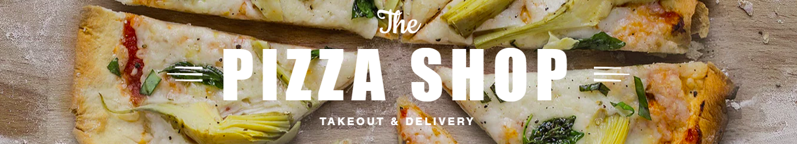

|  | |||||||||
| HOME | ABOUT | PORTFOLIO | CONTACT | ||||||
The word "pizza" first appeared in a Latin text from the central Italian town of Gaeta, then still part of the Byzantine Empire, in 997 AD; the text states that a tenant of certain property is to give the bishop of Gaeta duodecim pizze ("twelve pizzas") every Christmas Day, and another twelve every Easter Sunday.[4][11] Suggested etymologies include: Byzantine Greek and Late Latin pitta > pizza, cf. Modern Greek pitta bread and the Apulia and Calabrian (then Byzantine Italy) pitta,[12] a round flat bread baked in the oven at high temperature sometimes with toppings. The word pitta can in turn be traced to either Ancient Greek πικτή (pikte), "fermented pastry", which in Latin became "picta", or Ancient Greek πίσσα (pissa, Attic πίττα, pitta), "pitch",[13][14] or πήτεα (pḗtea), "bran" (πητίτης pētítēs, "bran bread").[15] The Etymological Dictionary of the Italian Language explains it as coming from dialectal pinza "clamp", as in modern Italian pinze "pliers, pincers, tongs, forceps". Their origin is from Latin pinsere "to pound, stamp".[16] The Lombardic word bizzo or pizzo meaning "mouthful" (related to the English words "bit" and "bite"), which was brought to Italy in the middle of the 6th century AD by the invading Lombards.[4][17] The shift b>p could be explained by the High German consonant shift, and it has been noted in this connection that in German the word Imbiss means "snack".